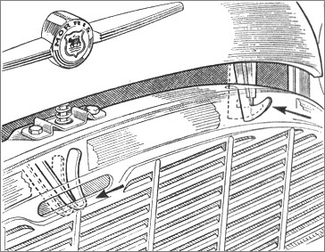

Hood lock
The hood lock keeps the bonnet securely closed while driving.
The hood lock has a two part mechanism: a release lever and safety catch.
The release lever is located in the center of the hood and the safety catch is beneath the hood on the left hand side.
Note: Keep the hood release lever and safety catch well lubricated.
The hood release lever and safety catch
